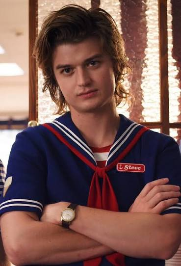

Steve Harrington
The Redemption Arc: Evolved from a stereotypical high school bully in Season 1 into the show’s most selfless protector.The "Babysitter": Gained massive fan adoration for his unexpected, protective bond with Dustin and the younger kids.Unmatched Growth: Humility, loyalty, and willingness to put himself in harm's way make him a constant fan favorite.

Jim Hopper
Emotional Depth: Started as a cynical, grieving police chief and grew into a deeply caring adoptive father.The Action Hero: Serves as the grounded, practical anchor who handles threats with raw grit and resourcefulness.Relatability: Critics frequently highlight his complex flaws, resilience, and ultimate sacrifices as the emotional core of the series.
.jpg)
Eleven
The Protagonist: The absolute driving force of the narrative, anchoring the show’s supernatural elements.A Journey for Agency: Her evolution from a traumatized, non-verbal lab experiment to a fierce young woman protecting her found family is incredibly compelling.Iconic Status: From her love of Eggo waffles to her universe-bending powers, she remains the definitive face of the franchise.
.jpg)